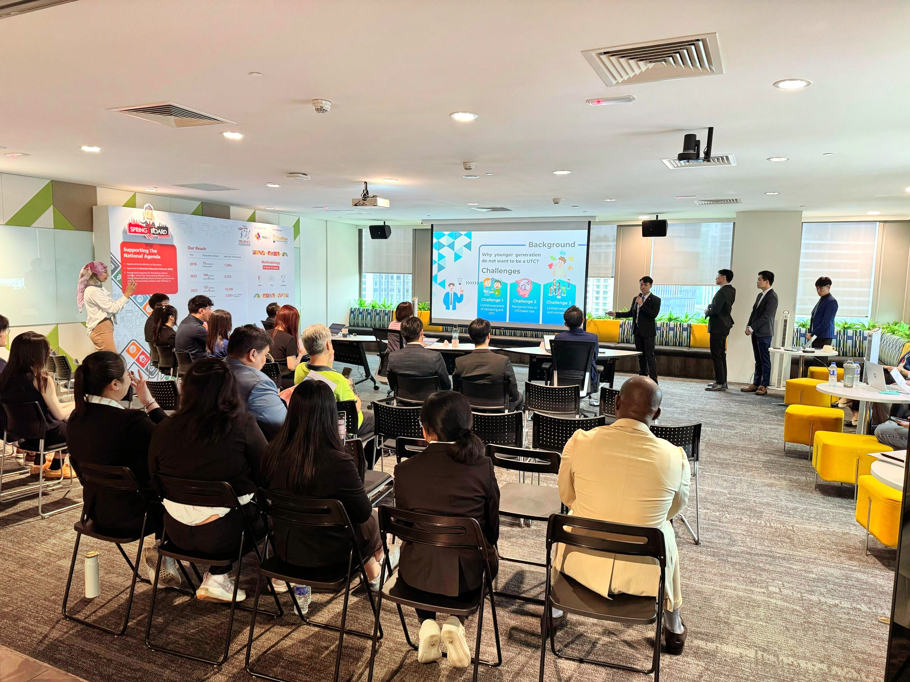
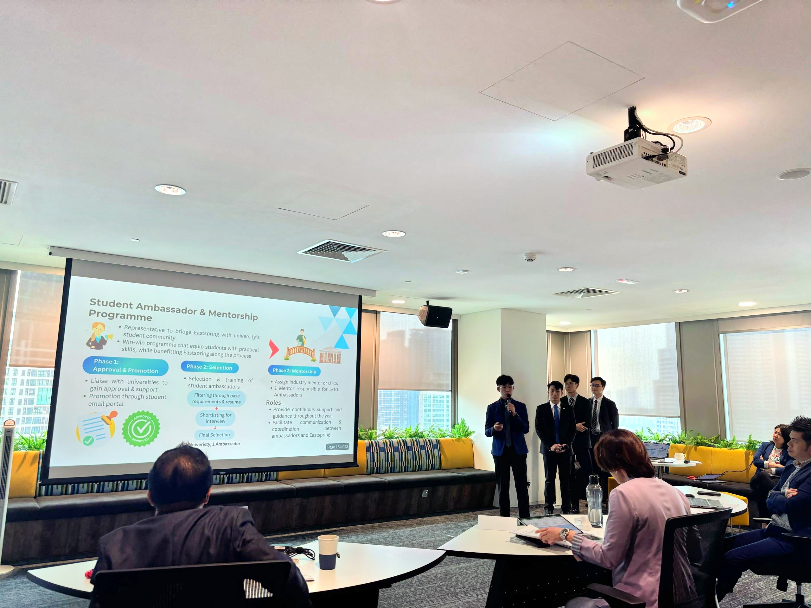
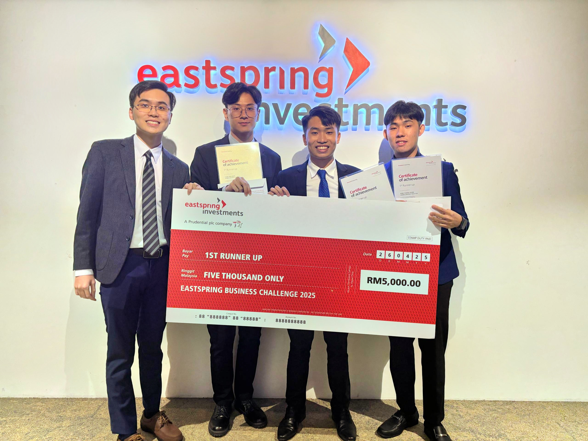

How can Eastspring attract and engage more Gen Z talent?
Eastspring Investments faced the challenge of strengthening its appeal among university students and young professionals while competing with other financial-services firms for the same emerging talent pool. The case focused on improving awareness of the Unit Trust Consultant career path and building a more effective recruitment strategy for younger audiences.
Our analysis identified a disconnect between Eastspring's existing promotional approach and the expectations of younger, digitally engaged candidates. Gen Z audiences were more likely to respond to meaningful career development, practical exposure, interactive engagement and opportunities to demonstrate their capabilities.
Diagnosing the recruitment problem before designing the solution
The team began by assessing Eastspring's existing recruitment approach, competitive environment and the characteristics of the youth talent segment to identify where the recruitment strategy could be strengthened.
Promotional mismatch
Existing promotional content was not sufficiently differentiated for younger and tech-savvy audiences. The analysis highlighted the need to communicate career benefits, meaningfulness and opportunities for candidates to demonstrate their capabilities more effectively.
Competitive talent market
Eastspring competes with established local and multinational asset managers for Unit Trust Consultants, creating pressure to strengthen employer visibility and build a more distinctive recruitment proposition.
Youth is already a key segment
Industry data showed that candidates aged 21–29 represented the largest group attending and passing the relevant unit-trust consultant examination, confirming both the attractiveness and competitiveness of the youth recruitment segment.
Recruitment requires more than advertising
The analysis suggested that stronger youth recruitment would require a broader ecosystem combining awareness, practical exposure, professional development, campus engagement and longer-term relationship building.
Four integrated pillars for building a sustainable Gen Z talent pipeline
Based on the market and SWOT analysis, our team developed an integrated recruitment strategy combining awareness, career exposure, capability development and longer-term university engagement.
Strategic Advertising
Strengthen Eastspring's visibility among university students through campus sponsorships, recruitment video competitions and gamified digital advertising designed around Gen Z engagement behaviours.
Career Service Promotion
Collaborate with university career offices and student organisations to introduce the Unit Trust Consultant career through career fairs, investment challenges, interactive activities and micro-internships.
Company Visitation & Workshop
Provide students with direct exposure to Eastspring's operations and culture through company visits, professional workshops, investment analysis exercises and mock consultation activities.
Student Ambassador & Mentorship
Build a scalable university network of student ambassadors who promote Eastspring, organise mentorship activities, engage prospective talent and connect university communities with industry professionals.
Turning the strategy into an executable recruitment programme
The proposal went beyond high-level recommendations by developing implementation schedules, programme structures, participation assumptions and estimated budgets for each strategic pillar.
Awareness & Advertising
Campus sponsorships, recruitment video competitions and gamified advertisements were designed to increase Eastspring's visibility while encouraging students themselves to participate in content creation and peer-to-peer promotion.
Career Service Activation
Career fairs would combine recruiter engagement with a 10-week investment portfolio challenge, interactive finance activities and four-week micro-internships to provide practical exposure to the financial-services industry.
Visits & Training Workshops
Quarterly company visits and follow-up workshops would expose students to Eastspring's operations while developing investment analysis, problem-solving, communication and consultation skills.
Ambassador Ecosystem
A university ambassador network supported by mentorship sessions, performance incentives and an annual Youth Summit would create a longer-term channel for attracting and developing prospective talent.
Building a scalable student ambassador and mentorship ecosystem
One of the most distinctive recommendations was a university-based Student Ambassador Programme designed to connect Eastspring with students through peer engagement, mentorship and structured career-development activities.
Student ambassadors would act as a bridge between Eastspring and their university communities by promoting the Unit Trust Consultant career, organising engagement activities and helping prospective candidates gain greater exposure to the financial-services industry.
Select & Develop
Recruit students with strong interest in financial markets, extracurricular involvement and sufficient time remaining before graduation, then provide them with structured objectives and development opportunities.
Engage the Campus
Ambassadors would promote Eastspring through social media, bonding sessions, mentorship workshops and collaboration with university business and finance societies.
Measure Performance
A points-based evaluation system would reward activities such as organising events, promoting Eastspring, supporting mentorship programmes and participating in strategic initiatives.
Reward & Retain
High-performing ambassadors could receive professional mentoring, networking opportunities, simulation experience, internship opportunities and other performance-based incentives.
From short-term recruitment campaigns to a sustainable youth talent pipeline
The proposed strategy was designed to improve Eastspring's visibility among university students while creating multiple touchpoints across awareness, career exploration, skills development and longer-term engagement.
Rather than relying only on conventional recruitment advertising, the proposal connected employer branding with practical experiences such as investment challenges, workshops, mentorship, micro-internships and student-led engagement.
Stronger Employer Visibility
Campus sponsorships, digital engagement and student-generated content were intended to strengthen Eastspring's presence among younger audiences and improve awareness of the Unit Trust Consultant career.
Better Candidate Engagement
Interactive activities, company visits and career programmes would allow students to experience the profession more directly instead of engaging only with traditional recruitment advertisements.
Talent Development
Workshops, mentorship sessions, investment challenges and micro-internships were designed to help prospective candidates build financial, communication and problem-solving capabilities before entering the profession.
Sustainable Recruitment Network
The Student Ambassador Programme and Youth Summit would create a recurring university-based engagement channel that could support recruitment, mentoring and cross-campus collaboration over time.
Contributing to strategy development and case execution
As part of the AlphaXMUM team, I contributed to the development of the Eastspring business case by working collaboratively on the research, strategic recommendations and preparation of the final competition deliverables.
The project required the team to translate market observations and recruitment challenges into practical initiatives supported by implementation structures, estimated budgets and a coherent strategic narrative.
Research & Analysis
Contributed to analysing the business challenge and evaluating Eastspring's recruitment environment, target audience and strategic opportunities.
Strategy Development
Participated in developing and refining recommendations that connected youth engagement, employer branding, career exposure and longer-term recruitment initiatives.
Proposal Development
Supported the preparation and communication of the team's recommendations through the written business proposal and competition presentation.
Presenting the strategy to industry judges — and finishing 1st Runner-Up
AlphaXMUM advanced to the final stage of the Eastspring Business Challenge 2025 and presented the team's recruitment strategy in person to industry representatives and judges.
The final pitch required the team to communicate a detailed business proposal clearly and concisely, translate extensive research into an executive-level presentation and defend the recommendations in a professional competition setting.



What this project demonstrates
This project demonstrates experience in approaching an open-ended financial-services business challenge, analysing market and recruitment conditions, translating insights into structured strategic recommendations, and developing practical implementation plans supported by budgets, timelines and programme design.
It also reflects the ability to work collaboratively on a competition case, communicate strategic ideas clearly and connect high-level recommendations with realistic execution considerations.